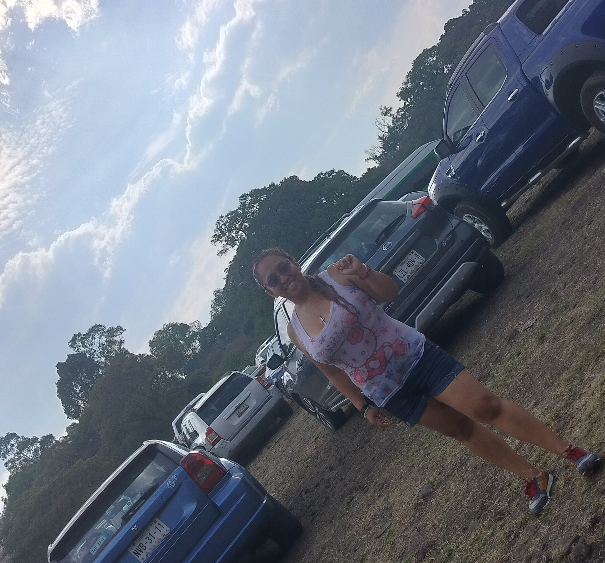
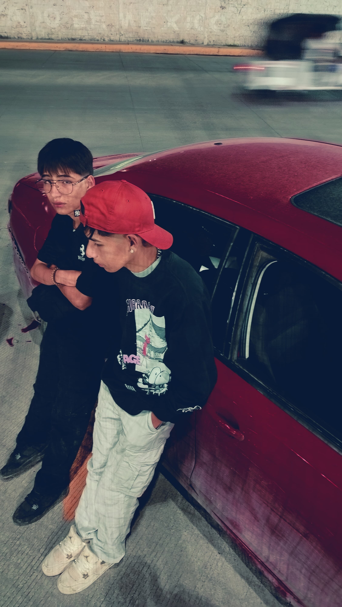

MI FAMILIA
Mi familia es muy unida y, la neta, bastante entretenida. Vivo con mi mamá y mis hermanos, y aunque a veces hay caos, siempre hay cariño. Algo que aprendí desde morro en mi casa es que si no puedes hacer algo para corregirlo, no vale la pena preocuparse. Esa frase me ha servido un chingo para aguantar vara en la vida.
Mi mamá
Mi mamá se llama Laura
Nació el 18 de junio de 1984 y, sin ofender, es básicamente la versión mejorada de mí: igual de chida, pero con un carácter mucho más fuerte. Es abogada, y de ella admiro un montón la resiliencia que tiene. A pesar de todo, siempre se mantiene firme, echándole ganas, y con los pies bien puestos en la tierra. Es de esas personas que aunque les cae el mundo encima, siguen de pie, sin perder el buen humor. A veces se me olvida si me influyó para entrar a la VOCA o no, pero igual siempre me ha apoyado con lo que decido.

Mis hermanos menores
Tengo dos hermanos menores, Alan y Óscar, que son gemelos y nacieron el 16 de agosto del 2011. A pesar de ser iguales por fuera, son muy diferentes en su forma de ser. Alan es mucho más sensible con las personas, como que le nace ser buena onda con todos, mientras que Óscar es más enojón que yo —y eso ya es decir—, es bien mecha corta.
Siempre me he llevado bien con ellos porque no nos llevamos tantos años, entonces crecimos casi a la par, como compas. Aunque últimamente no los veo tanto porque andan ocupados con sus cosas: juegan fútbol y tienen un buen de actividades, y aparte van en contraturno, así que casi no coincidimos. Pero cuando estamos juntos, todo bien, son banda.
